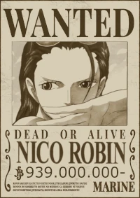
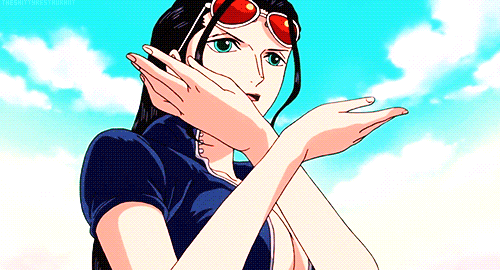

Quem é nossa linda Nico Robin?
Nico Robin (Niko Robin, também conhecida como Robin a Filha do Demônio) é uma personagem da obra japonesa One Piece de Eiichiro Oda. Inicialmente uma antagonista, ela depois convence o capitão Monkey D. Luffy a deixá-la entrar no seu bando dos Piratas do Chapéu de Palha. Uma arqueóloga assassina, suas intenções pareciam sempre ambíguas e a personagem é muito reservada até ser revelado que Robin nasceu na ilha Ohara que foi dizimada pelo Governo Mundial quando seus historiadores chegaram perto de descobrir os mistérios do Século Perdido. Somente ela sobreviveu e agora é a única pessoa no mundo que ainda consegue ler as antigas pedras chamadas Poneglyphs que contém segredos da história, um ato considerado tabu pelo Governo.
Serena e tranquila, Robin é uma das personagens que menos tem explosões emocionais. Ela é muito paciente e sábia, quase sempre está lendo e estudando quando sua tripulação navega. Sua vida como forajida a fez ser reservada e calma até em momentos de tensão ou quando ela está ameaçando alguém. Robin costumava se manter distante e falar pouco em decorrência do trauma causado pelo genocídio de seu povo mas após passar tempo com seus novos companheiros e ser salva por eles, ela começou a se abrir mais. Além disso, o amor dos Chapéus de Palha fizeram com que ela não se enxergasse mais como uma existência que só provoca tragédias e sim como alguém digna de estar viva. Após finalmente aceitá-los ela começa a ser mais brincalhona e relaxada, o que é evidenciado por suas risadinhas.
Poderes da nossa Robin-chan
Robin comeu a Hana-Hana no Mi, uma fruta do diabo do tipo paramecia que dá ao usuário a habilidade de duplicar e fazer brotar qualquer parte do próprio corpo onde a pessoa desejar, sejam superfícies ou até mesmo em outros seres vivos. Partículas em formato de pétalas rosas aparecem quando ela ativa seus poderes. Um dos golpes-padrão de Robin é a criação de várias mãos como forma de atacar ou agarrar seus adversários muitas vezes torcendo suas costas ou pescoço.
Robin costuma atacar com braços e pernas mas também age furtivamente criando olhos e orelhas para adquirir informações em segredo. Ela controla tão bem os poderes de sua fruta que é capaz de juntar diversos braços para criar asas, redes, e membros maiores que o tamanho normal. Após treinar dois anos com o Exército Revolucionário, Robin evoluiu seus poderes para conjurar membros gigantescos e criar clones completos de si mesma. Ela revela ser capaz de brotar uma cópia gigante da parte superior de seu corpo e ainda adicionar elementos demoníacos como asas de morcego, chifres e presas para intimidação. Ela também aprendeu golpes marciais de Karatê dos Homens-Peixe. Seu ponto fraco é que qualquer dano feito nas partes extras é sentida no corpo real de Robin. Assim como todo usuário de Akuma no Mi, Robin é amaldiçoada pelo mar e não consegue nadar.
Gostaria de conhecer os outros Mugiwaras?